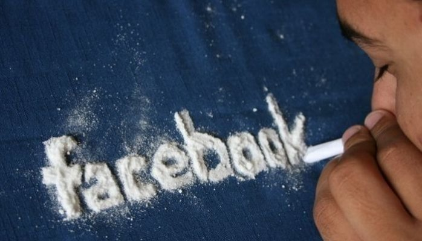

Welcome Post! 09-23-16
In this blog, I plan to reflect upon my experiences and observations made by utilitizing Facebook, which I have used Since April 9, 2009, and Snapchap which I have only had now for about two months, although I am finding it difficult to use Snapchat dilligently.
Ideally, viewers will be able to see what I see while using and observing through my words in my reflective posts.
Enjoy!
Blog Entry 10-05-16
April 14, 2009 --- The day I joined Facebook. I can't lie, it was the first major social media platform I was part of. I was very aware of others, such as MySpace and vairous IM networks; just never could get into them. I was much too interested in sports and being a "kid". But more about Facebook... One thing I love doing when researching and in general analyzing anything, I like to look at interesting facts that surround whatever it is, in this case, Facebook. The first interesting fact is that Facebook is the second most visited site behind Google itself. Second, on average, Americans as a whole spend 13.9 billion miutes of Facebook (for one person that is 26,446 years straight with no break). Lastly, if Facebook was a country, it would be the 5th largest country in the world. I cannot gurantee that everyone finds this all interesting, but I do. When I am doing anything, I like to feel like there is something more than just wasting time. Honestly with Facebook, I get that feeling. I get the feeling that there are a number of non-related reasons to be involved. Because of Facebook, I met family I never knew that I had. I found friends I never would have found, and I waste so much time doing all of the little games that come with Facebook. All of this makes Facebook worth it. This is however just a beginning analysis of how I actually use and feel about Facebook, who knows, maybe after thinking into it more, I will hate it.
Blog Entry 10-12-16

At this point, I finally have something to say about Snapchat. It is so easy to use, so easy to gain friends, yet so hard to find my friends who are active enough for me to see it "worth it". Just like I did last week, I want to say some interesting facts that I learned about regarding Snapchat. First, Co-founders Evan Spiegel and Bobby Murphy first began at Stanford University with a site called Future Freshman. They failed about 34 times before coming upon what we know today of Snapchats. Secondly, the name that was existing before Snapchat was Picaboo. Snapchat rebranded in 2012 when they made the decision to give the site a new image. The last interesting fact for Snapchat that I have is that it is estimated that 70% of all users are women. I can actually believe this, I seldomly find my guy friends on Snapchat, unless they are on because of some woman. I only ever even thought about it because my wife wanted to send me funny pictures all day long and not through text. Whereas I just don't care, a picture is a picture, wherever it comes from. By deciding to actually engage in this social media platform, I noticed right away that there was a specific type of person from my friend group present. Not going to lie, not many of my friends ever took the leap to Snapchat resulting in being on Snapchat not really that much fun.
Blog Entry 10-19-16
What am I starting to notice about Facebook and Snapchat? They are the same thing, just different. Yes, I said that. In the case of Facebook, I easily have a lot of friends, but if I do not engage with them, it can actually be very lonely to just be watching other peoples posts. In the case of Snapchat, with my specific friend group, It is also lonely to be on. If I am lucky someone will do maybe a couple things the entire week. This is bothersome because Snapchat thrives off of constant give and take with the picture exchange. With this understanding, I know that in my specific situation, I could not become a crazy Snapchat user like others I know. I feel like I would be expending too much work only to receive a tiny bit of feedback from friends. If I send something, I would like responses, and my friend group does not bring that, nor do I want to go out and search for the friend group that will. I am well satisfied with the way things are already. Why mess up something that is good?
Blog Entry 10-26-16
Why are we so addicted to Social Media? I mean really, as part of learning more about Snapchat, I looked into people that even if I was not directly connected to, I had knowledge they were very active via Snapchat. A great example, my little sister. I just don't get it. What is so addicting? She is so crazy over Snapchat that even her common speach is altered. Instead of text me or call me later, it is ALWAYS Snapchat me. I time in and time out tell her she is crazy. I will not be that older brother caught Snapchatting my teenage sister. I barely want to Snapchat my own wife. This leads me to something I have thought about more and more relating to Snapchat, and Facebook even in a lot of cases. I am absolutely fascinated that some people have made social media a major part of life. Before bed, after first waking, on toilet, during commute. Social media has taken over everything. It is fascinatig, yet I just don't get it. Is it the stories and filters on Snapchat? Or the games and obvious spying and trolling on Facebook? When I catch myself being occupied by social media, I usually do not know why I am on it other than filling time in my day. I will more than likely always be on social media, but just not the way I see so many others involved with it. So sue me. lol. Over the couse of the last 2 years, I even went from over 4k friends to just over 200 now. And that is even just too many for my liking. It is amazing how much you can learn by just paying more attention to what you are doing. I don't know why I participate in social media, maybe it is the feeling more important. I don't know, but this project is making me really reconsider a lot of things.
Blog Entry 11-02-16
This is actually pretty funny, if you ask me, and this is all about me.
Wow! Such an exciting time to be alive as me. I am now married. Slightly for the fun of it and slightly for this project, my wife and I decided to Facebook and Snapchat our wedding. What? Why? Well, why not? We live in a time where everything is on the internet, so why not jump in front of the social media band wagon and do it by choice rather than because someone else decided. Not to mention, how cool is it to decide to Facebook live your wedding? Really cool is the answer, till you have no signal so it doesn't work out last minute anyways. However, the feedback we recieved based on the idea alone let us know that it was the right thing to do for us.
Final Post! Reflecting Back